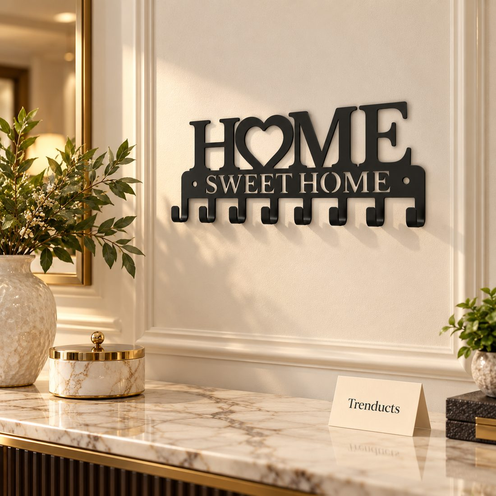
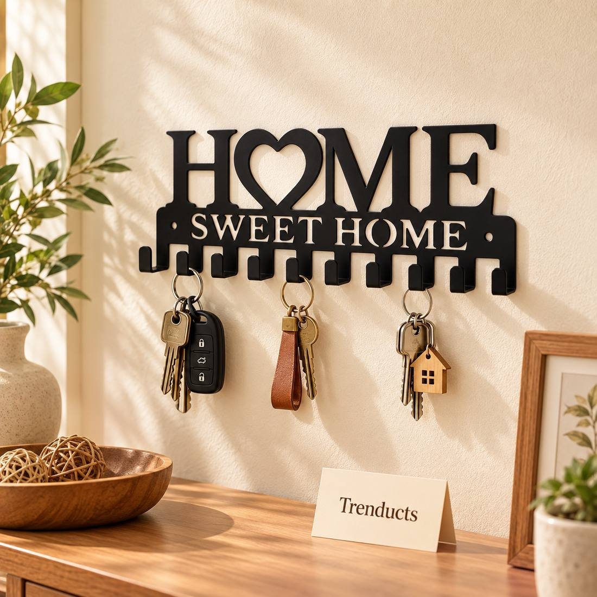
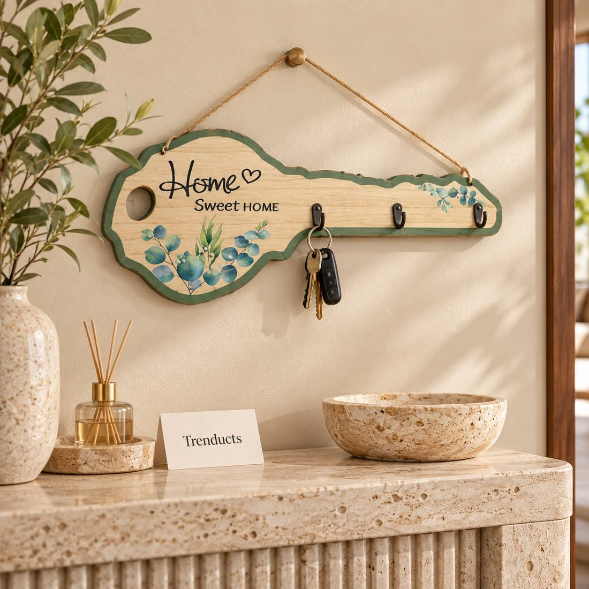

A simple drop zone near the door saves time every morning. Ideas for Pakistani homes and flats, from key holders to shoe space and a place for bags.



"Ammi, meri chaabi kahan hai?" It is a common morning question in Pakistani homes. Car keys, bike keys, gate keys, the key to the roof door and the spare set for the main lock all seem to disappear exactly when someone is getting late. Most of us leave keys wherever we put them down: on the fridge, in a jacket pocket, on the dining table. A simple drop zone by the entrance fixes this for good.
A drop zone is one small area by the door where you leave the things you carry in and out every day: keys, wallet, sunglasses, a bag, a mask, a charger. Because everything goes in the same place, you always know where to find it. It does not need a large hallway; a section of wall is enough.
A wall key holder with hooks is the heart of the drop zone. Give each family member a hook and keep the spare keys on a separate hook further up. Many key holders include a small shelf on top for wallets, phones or letters. Wooden designs bring warmth, while decorative styles with phrases like "Home Sweet Home" add a personal touch.
Mount the holder at eye height beside the main door, where you naturally reach as you walk in. Avoid placing it right next to the door where it could be seen and reached from outside through a window or the door gap. Using strong wall plugs and screws matters, since a holder full of keys and bags can be heavy.
Most households have many similar keys. Colour-coded key covers or small tags make it quick to find the right one. Write down which key is which in a note on your phone, and keep one spare set with a trusted relative or neighbour.
In apartments, the entrance often opens straight into the lounge. A slim key holder with a shelf and a pair of hooks uses very little space. If you cannot drill, use heavy-duty adhesive hooks for keys, though they hold less weight.
A drop zone only works if everyone uses it. For the first few weeks, put keys on the hook every time you come in, and remind children gently. Once it becomes automatic, mornings get calmer.
Never label keys with your address. Keep car keys out of sight from the door. Some families store important spares in a locked drawer instead of a visible hook.
The entrance is the first thing guests see. A plant, a nice light and a neat key holder can make even a small doorway feel welcoming.
To get started, browse these wall key holders and wall decor pieces in wood and decorative styles, many with a shelf. A few rupees spent on a key holder can save many stressful mornings.
A place for everything by the door means fewer frantic searches and a smoother start to every day.